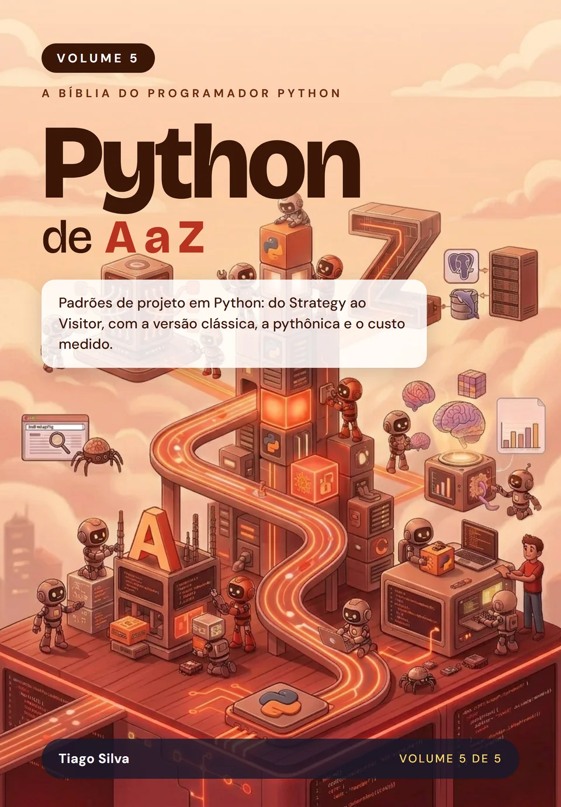

Python de A a Z: Padrões de projeto
por Tiago Silva
Os padrões de projeto clássicos e os que aparecem em todo projeto, escritos como o Python os escreve: a versão clássica, a pythônica, quando não usar e o custo medido.
- Páginas
- 542
- Idioma
- Português
- Publicação
- 10/2026
- Versão do Python
- 3.15
- Formatos
- Impresso e e-book (ePub)
Sobre este livro
Padrões de projeto do jeito que o Python escreve
Os padrões de projeto nasceram em linguagens como C++ e Java, e muita gente os copia para o Python sem adaptar, gerando código verboso e pouco pythônico. Este volume mostra, para cada padrão, o problema que ele resolve, a versão clássica de orientação a objetos, a versão pythônica (muitas vezes bem menor, com funções, decoradores e protocolos), quando não usar e o custo medido de cada uma.
Você percorre os padrões de criação, estruturais e comportamentais, os compostos (como o MVC) e os do dia a dia que o catálogo clássico não traz: Object Pool, Null Object, Repository e Unit of Work, Specification, Registry e injeção de dependência. O livro termina com um guia para escolher o padrão certo, e para reconhecer quando a melhor escolha é não usar nenhum.
Em entrevistas e revisões de código para vagas plenas e sêniores, falar a linguagem dos padrões é o que mostra maturidade: é o vocabulário comum de quem projeta sistemas. Entender o porquê de cada um, e não só o nome, é o que fecha a formação de um especialista Python completo.
Por onde começar
Se você nunca programou, comece pelo Volume 1. Este volume pressupõe o Python do dia a dia dos Volumes 1 e 2 (classes, herança, Protocol, decoradores, geradores e dataclass) e noções de testes e tipagem do Volume 3. Se você já tem essa base, pode começar direto por aqui. Cada capítulo traz uma ficha com os pré-requisitos exatos. Os cinco volumes formam a coleção completa, mas cada um se sustenta sozinho.
O que você vai aprender
- Reconhecer o problema que cada padrão resolve, e quando ele só atrapalha
- Criar objetos sem acoplar o código ao concreto: Factory Method, Abstract Factory, Builder, Singleton, Prototype e Object Pool
- Combinar objetos em estruturas: Adapter, Facade, Decorator, Composite, Proxy, Bridge e Flyweight
- Distribuir responsabilidades: Strategy, Observer, Command, State, Iterator, Visitor, Interpreter e outros
- Aplicar os padrões do dia a dia: Null Object, Repository e Unit of Work, Specification, Registry e injeção de dependência
- Comparar a versão clássica com a pythônica, com o custo medido de cada uma
- Escolher o padrão certo, e reconhecer quando a melhor escolha é nenhum
Sumário
32 capítulos. Toque em um item para ver do que ele trata.
1O que São Padrões de Projetop. 43
2Factory Methodp. 59
3Abstract Factoryp. 71
4Singletonp. 83
5Builderp. 97
6Prototypep. 109
7Object Poolp. 121
8Adapterp. 139
9Facadep. 151
10Decoratorp. 163
11Compositep. 177
12Proxyp. 191
13Bridgep. 205
14Flyweightp. 217
15Strategyp. 235
16Observerp. 247
17Commandp. 261
18Template Methodp. 275
19Iteratorp. 289
20Statep. 303
21Chain of Responsibilityp. 317
22Mediatorp. 331
23Mementop. 347
24Visitorp. 363
25Interpreterp. 381
26Padrões Compostos: MVCp. 403
27Null Objectp. 421
28Repository e Unit of Workp. 441
29Specificationp. 461
30Registry e Pluginsp. 481
31Injeção de Dependênciap. 501
32Conclusão: Escolhendo o Padrão Certop. 521
Avaliações
O que os leitores dizem
Texto da avaliação.